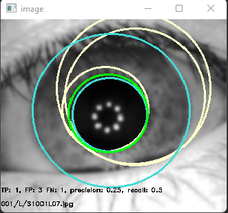
Biometria: Detekovanie dúhovky na obrázku. Úlohou je aplikovať na obrázky
metódy
lokalizácie objektov a vyhodnotiť úspešnosť oproti dostupným pravdivým hodnotám.

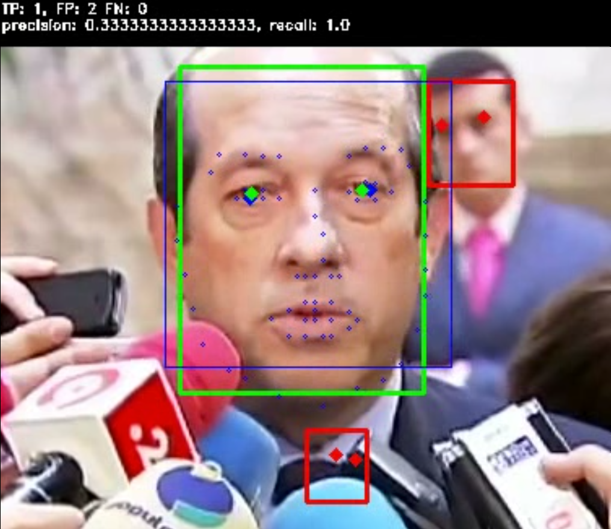
Biometria: Program, ktorý vo videu (z datasetu YoutubeFaces) detekuje ľudské
tváre.
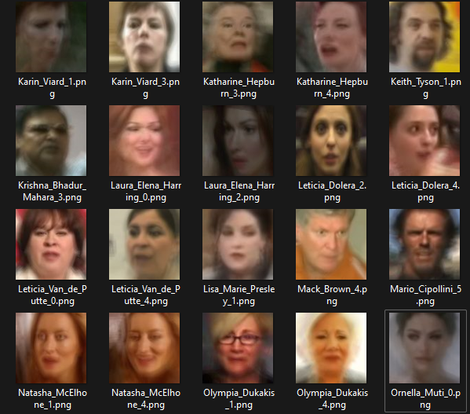
Biometria: Program, ktorý dvom ľuďom z dvoch videí určí, či ide o rovnaké
alebo
rozdielne osoby (Rozhodne, či na dvoch videách je rovnaká/rozdielna osoba). Pomocou zhlukovacieho
algoritmu rozdelí ľudí na (napr.) 2 skupiny (mužy a ženy).
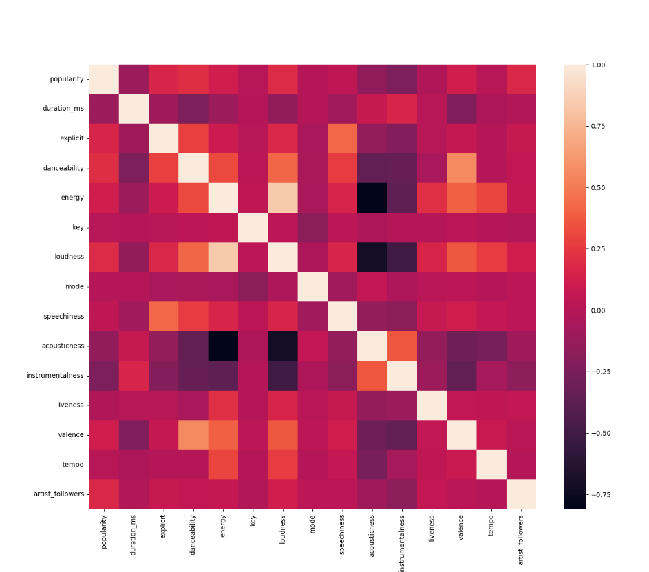
Strojové učenie a neurónové siete:
Program, ktorý bude predpovedať
hlasnosť (loudness) piesne. Trénovajú rôzne regresné modely (Bagging, Boosting, SVM). Použité
dáta boli zozbierané: Spotify
API
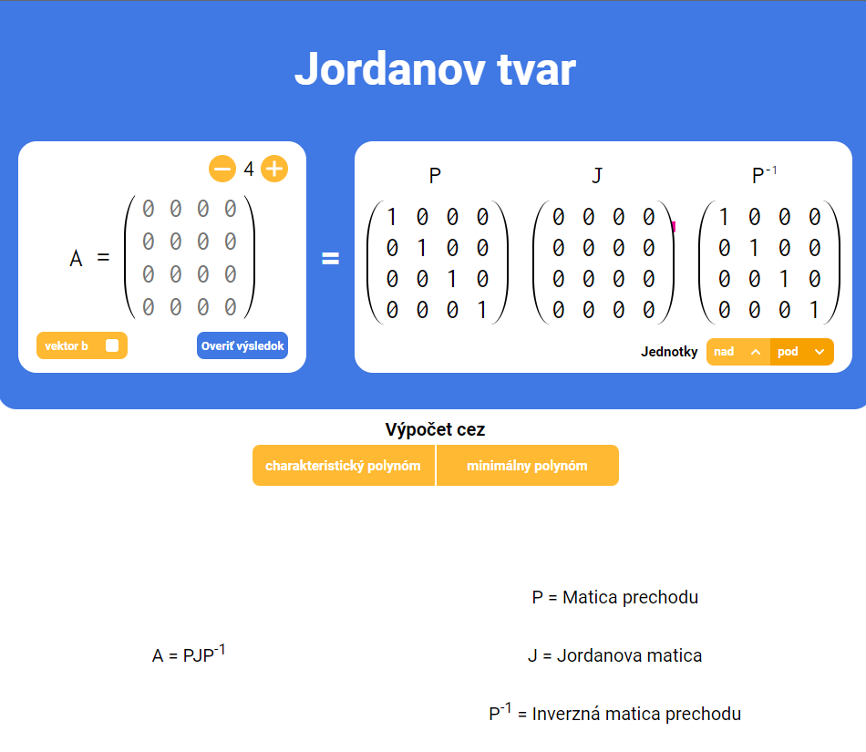
Bakalárska práca na tému: Didactická aplikácia pre výpočet Jordanovho tvaru
štvorcovej matice.
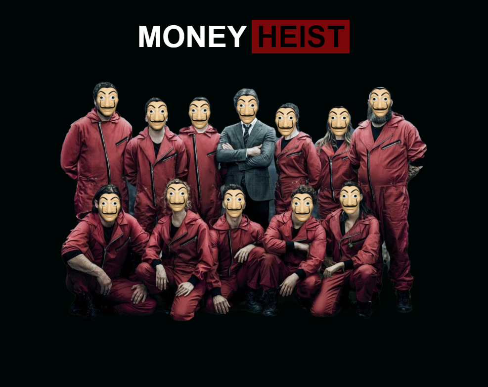
Predmet Webové technológie 1: Vytvorenie web stránky, ktorá obsahuje viacero
zvýraznených oblastí. Tieto oblasti sú aktívne. Pokiaľ sa myšou prejde nad aktívnu časť, tak sa zobrazia
informácie o danej oblasti.
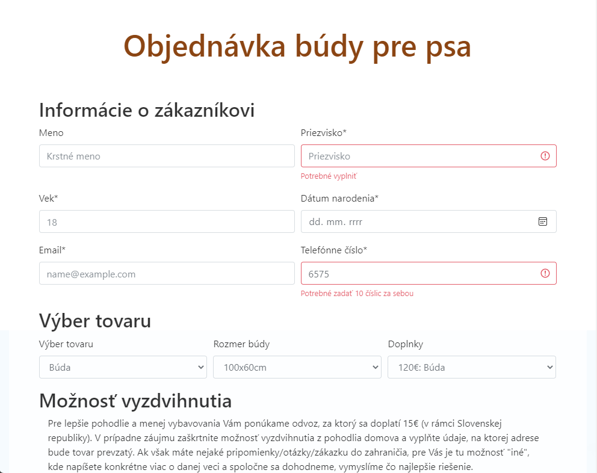
Predmet Webové technológie 1: Vytvorenie web stránky, pomocou ktorej je
možné
odoslať
formulár na vopred nastavený mail s využitím Bootstrapu.
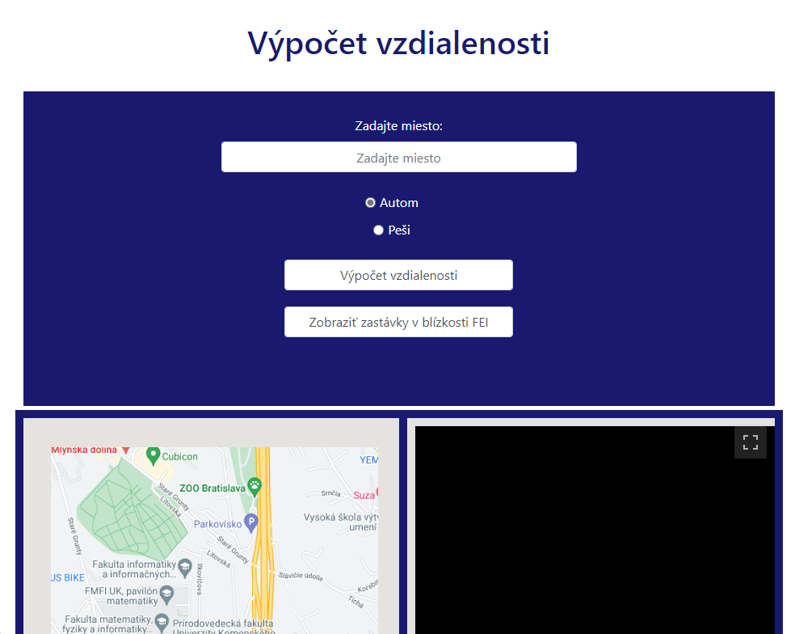
Predmet Webové technológie 1: Využitie Google Maps pre nájdenie najbližších
zástavok pri FEI STU BA. Taktiež zobrazenie vzdialenosti a dĺžky od zadaného miesta ku FEI STU BA.
(Vypršala skúšobná doba)
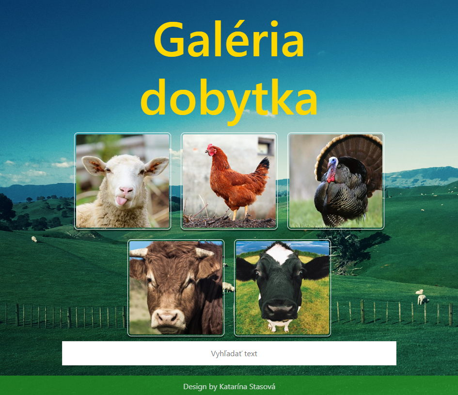
Predmet Webové technológie 1: Vytvorenie web stránky, s viacerými obrázkami,
ktoré
je možné premiestňovať. Dajú sa rozkliknúť a spustiť (stopnúť) v prezentácii. Selectuje sa na základe
popisu obrázkov. Stránka je doplnená o správu cookies.
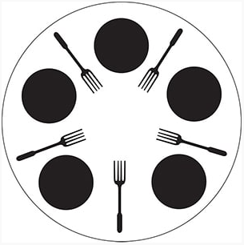
Predmet paralelné programovanie a distribuované systémy:
- Oboznámenie sa s vláknami
- Mutex, multiplex, turniket, bariéra
- Producenti-konzumenti, čitatelia-zapisovatelia
- Večerajúci filozofi
- Fajčiari, divosi
- Barber
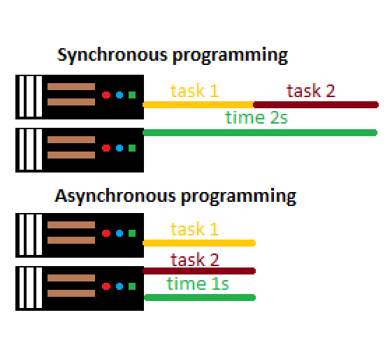
Predmet paralelné programovanie a distribuované systémy:
- Koprogramy
- Asynchrónne programovanie
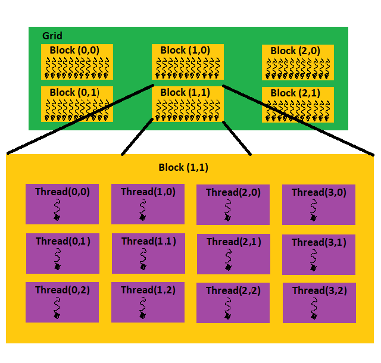
Predmet paralelné programovanie a distribuované systémy:
- Programovanie na GPU: CUDA
- CUDA prúdy a udalosti
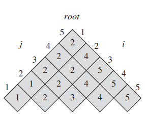
Algoritmy a dátové štruktúry:
Vytvoriť optimálny binárny vyhľadávací strom zo slovníka, pričom sa berie aj frekvencia jeho využívania.
Následne po zadaní slova program vyhodnotí, či sa slovo v slovníku nachádza a či má viac ako 5000
výskytov.
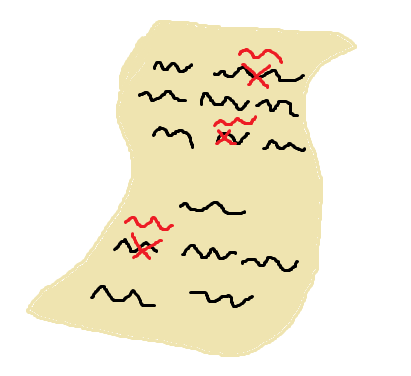
Algoritmy a dátové štruktúry:
Program opraví vstupný text podľa slovníka. Ak sa slovo v slovníku nenachádza, nahradí ho za
najvhodnejšie zo slovníka podľa algoritmov: editačná vzdialenosť/ najdlhšia spoločná podpostupnosť.
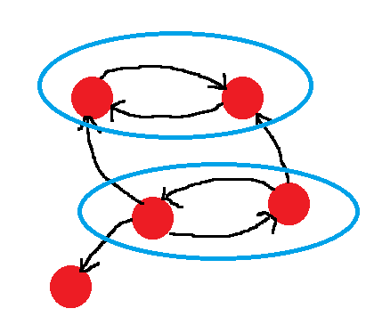
Algoritmy a dátové štruktúry:
2-SAT solver- program načíta súbor s logickou formulou v konjunktívnej normálnej forme a s polynomiálnou
zložitosťou zistí, či je vstupná formula ne/splniteľná (ak áno, priradí pravdivostné hodnoty).

Algoritmy a dátové štruktúry:
Pomocou algoritmov union-find a KDTree doplniť najkratšie hrany tak, aby sa z každého bodu bolo možné
dostať do každého.
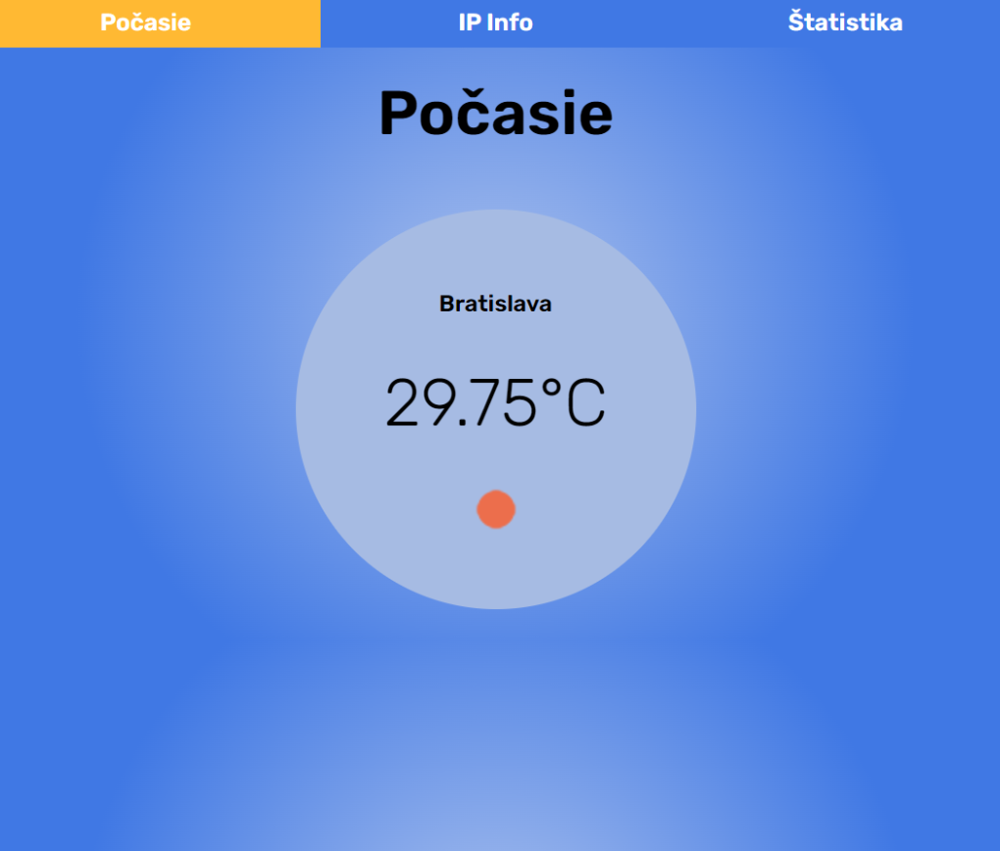
Webové technológie 2:
Webová aplikácia s 3 stránkami. Na 1. sa zobrazuje predpoveď počasia pre miesto, lokalizované
pomocou IP návštevníka. Na 2. sa zobrazia informácie zodpovedajúce získanej IP adresy. Na poslednej
stránke sú štatistiky o návštevníkoch, ktoré sa ukladali do databázy. Dominantou je mapa
(OpenStreet map), kde sa zobrazujú lokalizovaní návštevníci.
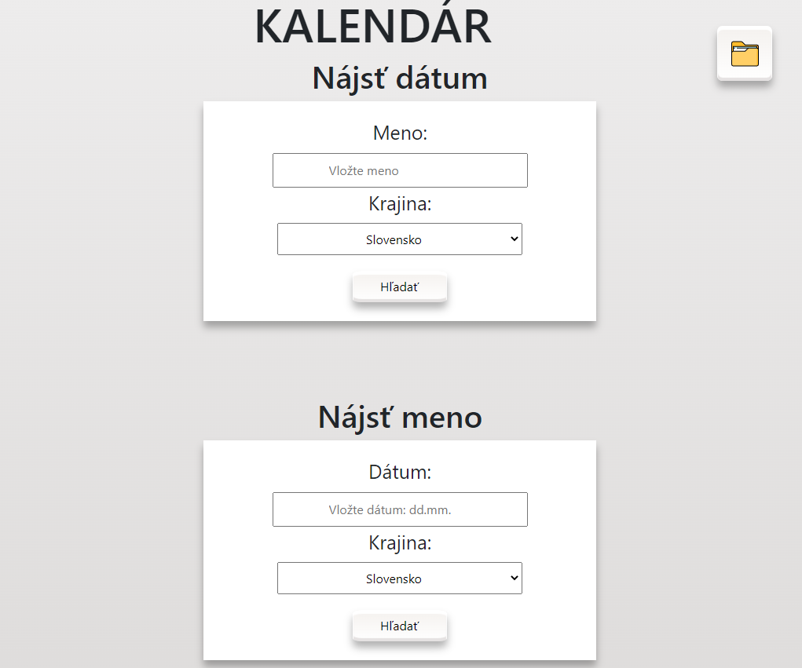
Webové technológie 2:
Webová služba, ktorá poskytuje informácie o meninách osôb na základe priloženého xml. Metódy
API umožňujú na základe dátumu zistiť, kto má v ten deň meniny. Na základe mena zistiť, kedy oslavuje
meniny. Získať zoznam sviatkov a pamätných dní. V poslednom rade vložiť meno do kalendára.
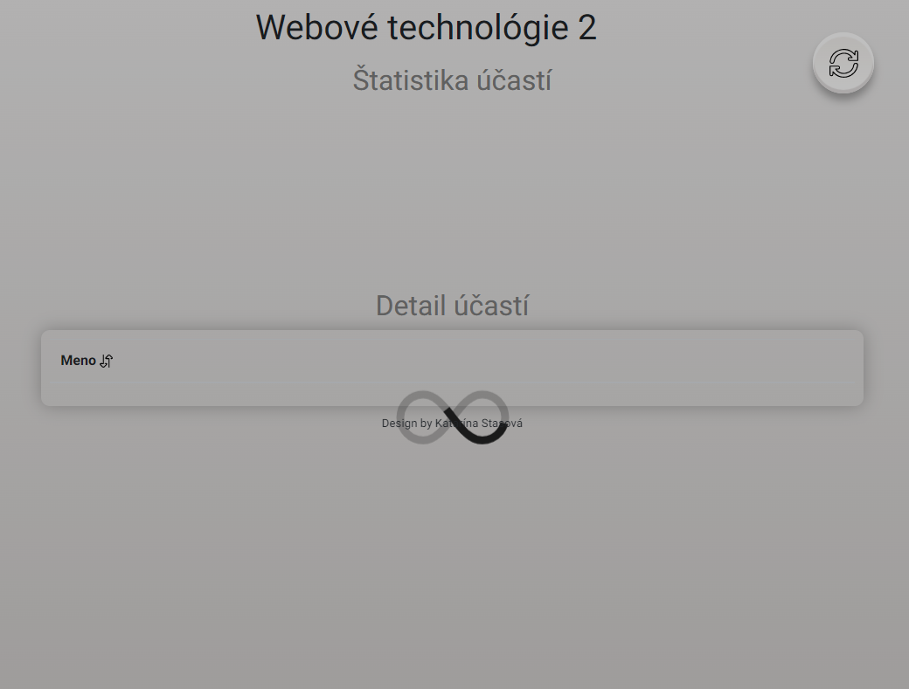
Webové technológie 2:
Webová aplikácia preberá údaje z iných vzorov na web stránkach. Programované to bolo konkrétne github
stránku (bez použitia API) pomocou CURL. Aplikácia sleduje dochádzku na prednáške.
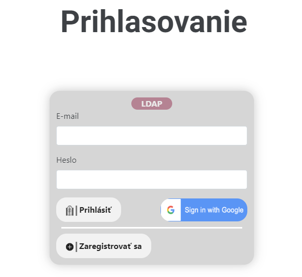
Webové technológie 2:
Webová aplikácia na prihlasovanie v 3 možnostiach (vlastná registrácia, LDAP, Google). Pri vlastnej
registrácii použitie 2FA. Použitie databázy na ukladanie informácií o jednotlivých užívateľoch.
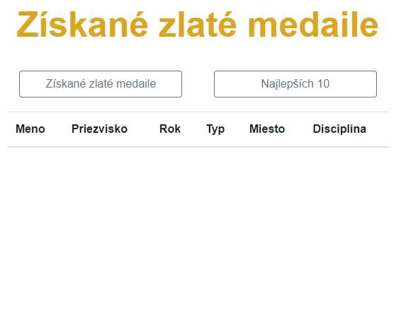
Webové technológie 2:
Webová aplikácia o olympijských víťazoch. Informácie o nich sú získané zo súborov, ale je možné
oymionikov modifikovať, pridávať nových alebo aj mazať. Takiež je možné zobraziť detail športovca.